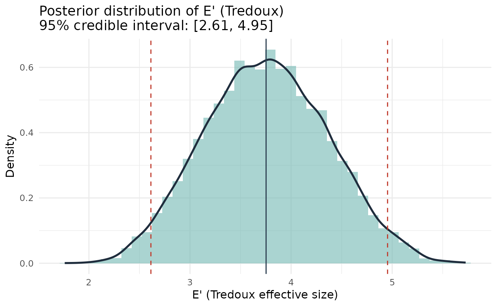

Bayesian Posterior Distribution of Tredoux Effective Size
Source:R/esize_T_bayes.R
esize_T_bayes.RdFits a Dirichlet-Multinomial conjugate model to mock-witness choice counts and returns the posterior distribution of the Tredoux effective size E'.
Arguments
- lineup_table
A table of lineup choice counts (one entry per position).
- alpha
Dirichlet concentration parameter(s). A scalar (applied to all k positions) or a length-k numeric vector. Typical choices: 0.5 (Jeffreys prior, default), 1 (uniform over the simplex), 0.1 (weakly informative). Smaller values allow the posterior to concentrate more sharply around the observed proportions.
- S
Number of posterior draws. Default 10000.
- credible_mass
Width of the equal-tailed credible interval. Default 0.95.
- threshold
Optional finite scalar. When supplied, the function also reports P(E' < threshold | data) and P(E' > threshold | data), enabling direct probability statements about whether the lineup is functioning below or above a fairness benchmark.
Value
An object of class "esize_T_bayes" containing:
- E_draws
Numeric vector of S posterior draws of E'.
- posterior_mean
Posterior mean of E'.
- posterior_median
Posterior median of E'.
- credible_interval
Named 2-vector (lower, upper) giving the equal-tailed credible interval.
- prior_alpha
The alpha vector used.
- n
Total number of mock-witness choices.
- k
Number of lineup positions.
- S
Number of posterior draws.
- credible_mass
Credible interval width.
- threshold
Threshold value supplied, or NULL.
- threshold_probs
List with
P_belowandP_above, or NULL when no threshold was supplied.
Details
Tredoux's effective size E' = 1/sum(p_i^2) is mathematically identical to the reciprocal of the Herfindahl-Hirschman concentration index (Herfindahl, 1950; Hirschman, 1945) and to the reciprocal of Simpson's (1949) concentration statistic lambda. The Bayesian approach estimates the latent choice-probability vector p rather than E' directly.
With mock-witness counts n = (n_1, ..., n_k) and a Dirichlet prior: $$p \sim \mathrm{Dirichlet}(\alpha_1, \ldots, \alpha_k),$$ the posterior is conjugate: $$p \mid n \sim \mathrm{Dirichlet}(n_1 + \alpha_1, \ldots, n_k + \alpha_k).$$ Each posterior draw of p is mapped to a draw of E' via E'(p) = 1/sum(p_i^2). The resulting posterior distribution of E' summarises uncertainty about effective lineup size given the observed choices.
Dirichlet samples are generated by normalising independent Gamma draws (base R only; no additional package dependencies).
For publication, a prior sensitivity analysis using at least alpha = 0.5, 1, and 0.1 is recommended. If the substantive conclusion changes across these priors, the mock-witness sample is likely too small to support a confident fairness conclusion.
References
Herfindahl, O. C. (1950). Concentration in the US steel industry. Doctoral dissertation, Columbia University.
Hirschman, A. O. (1945). National power and the structure of foreign trade. University of California Press.
Simpson, E. H. (1949). Measurement of diversity. Nature, 163, 688.
Tredoux, C. G. (1998). Statistical inference on measures of lineup fairness. Law and Human Behavior, 22(2), 217-237.
Examples
counts <- c(18, 7, 5, 4, 3, 3)
lineup_table <- as.table(setNames(counts, 1:6))
# Default Jeffreys prior
result <- esize_T_bayes(lineup_table)
print(result)
#> Bayesian Posterior: Tredoux Effective Size (E')
#> ------------------------------------------------
#> k (positions): 6 N (choices): 40 S (draws): 10000
#> Prior: Dirichlet(alpha = 0.50)
#> Posterior mean: 3.758
#> Posterior median: 3.753
#> 95% credible interval: [2.613, 4.954]
# With a fairness threshold
result2 <- esize_T_bayes(lineup_table, threshold = 4)
print(result2)
#> Bayesian Posterior: Tredoux Effective Size (E')
#> ------------------------------------------------
#> k (positions): 6 N (choices): 40 S (draws): 10000
#> Prior: Dirichlet(alpha = 0.50)
#> Posterior mean: 3.747
#> Posterior median: 3.734
#> 95% credible interval: [2.621, 4.924]
#> P(E' < 4.00 | data): 0.660
#> P(E' > 4.00 | data): 0.340
# Plot the posterior
plot(result)
